3. Grafinės suvestinės
3.1 Teorinė dalis
Šioje dalyje pateikta teorinė medžiaga apie dažnai statistinėms suvestinėms atlikti naudojamus grafikus. Peržiūrėkite šioje dalyje pateiktą video medžiagą, išnagrinėkite grafikus.
Bet pirmiausia keletas svarbių sąvokų:
- Kintamojo reikšmių pasiskirstymas, arba skirstinys (angl. distribution), – tai būdas arba taisyklė, kaip išsidėsto mūsų tiriamo kintamojo reikšmės: kai kurios reikšmės pasitaiko dažniau, kai kurios rečiau, kai kurių gali apskritai nebūti.
- Statistinis dažnis (angl. frequency) parodo, kaip dažnai reikšmė pasitaiko duomenų eilutėje.
- Dažnių lentelė (angl. frequency table) – parodo, kaip dažnai kiekviena iš reikšmių pasitaiko arba kaip dažnai patenka į tam tikrą reikšmių intervalą.
- Reikšmių grupavimas į intervalus angliškai vadinamas binning, o tokio tipo intervalas – bin.
- Mediana (žymėsime Md) – tai reikšmė, duomenų eilutę dalinanti į 2 lygias dalis. Įprastai tai vidurinė duomenų eilutės reikšmė arba dviejų vidurinių reikšmių vidurkis.
- Moda (žymėsime Mo) – dažniausiai pasitaikanti duomenų eilutės reikšmė. Taip pat moda galima vadinti dažniausiai pasitaikančių reikšmių intervalą, jei duomenys grupuoti.
- Duomenų sklaidos matai parodo, ar duomenys nuo centro nutolę daug, ar nedaug.
3.1.1 Grafikai vieno kintamojo apibendrinimui
Kategoriniams nominaliesiems, ranginiams ir diskretiesiems duomenims
Tolydiesiems duomenims
Pav. 3.1: Pavyzdys, kaip analizuoti histogramą.
Pav. 3.2: Histogramos grupavimo intervalo pločio parinkimas. A – per siauras intervalas (per didelis intervalų skaičius) išryškina triukšmą ir paslepia tendenciją. D – per platūs intervalai (per mažas intervalų skaičius) taip pat paslepia tikrąją tendenciją. B, C – tinkamai parinktas intervalų skaičius, matoma tendencija. B – geriausias variantas. Įprastai reikia tarp 5 ir 15 intervalų.
Pav. 3.3: Vienas duomenų taškas atvaizduotas branduoline kreive. Branduolinio tankio diagramoje vienas taškas aprašomas kreive, vadinama branduoliu, kuri ties centru aukščiausia, o į kraštus mažėja. Pavyzdyje (A, B, C, D) tai Gauso kreivės, kurios gali skirtis savo pločiu. Branduolio formą ir plotį pasirenka tyrėjas, visgi kiekvienam grafiko taškui aprašyti naudojami identiški branduoliai.
Pav. 3.4: Branduolinio tankio diagramoje (BTD) atvaizduoti visi duomenų eilutės taškai. Svarbu pasirinkti tinkamą branduolio plotį. A – per siauri branduoliai ne pakankamai gerai suglotnina kreivę, matosi triukšmas, sunku įžiūrėti tendenciją; D – per platūs branduoliai per daug suglotnina duomenis, BTD smarkiai išeina už realių duomenų ribų, taip pat nesimato tikrosios tendencijos; B, C – pakankamai gerai parinktas branduolio plotis; C – geriausias variantas.
Pav. 3.5: Informacijos branduolinio tankio (BTD) ir stačiakampėje diagramoje palyginimas. Abiejų tipų diagramose atvaizduoti tie patys duomenys. \(Md\) – mediana, \(Q_1\), \(Q_3\) – pirmasis ir trečiasis kvartiliai.
Pav. 3.6: Branduolinio tankio diagramos (BTD) naudojimas grupių lyginimui. Iš grafiko matosi, kad S. pratensis augalai turėjo santykinai daugiau ilgesnių stiebų nei S. officinalis (nes mėlynas grafikas pasislinkęs į didesnių reikšmių pusę).
3.1.2 Diagramų palyginimas
Šiame poskyryje bus palyginta informacija, kuri matosi skirtingų tipų vieno kintamojo suvestinėms skirtuose grafikuose. Apibendrintas diagramų palyginimas pateiktas lentelėje 3.1.
| Diagrama | Centras¹ | Sklaida | Kelios viršūnės | Asimetrija | Imties dydis | Būtini parametrai² |
|---|---|---|---|---|---|---|
| Stulpelinė diagrama | Moda\(^*\) | Matosi | Matosi | Matosi | Matosi tiksliai³ | nėra |
| Pasklaidyti taškai | (matosi apytiksliai) | Matosi | Matosi | Matosi | Matosi preliminariai | taškų pasklaidymo plotis |
| Histograma | Moda\(^*\) | Matosi | Matosi | Matosi | Matosi tiksliai³ | grupavimo intervalų skaičius/ilgis |
| Branduolinio tankio diagrama | Moda\(^*\) | Matosi | Matosi | Matosi | Ne | branduolio forma ir plotis |
| Stačiakampė diagrama | Mediana | Matosi | Ne | Matosi | Ne | nėra |
| Smuikinė diagrama | Moda\(^*\) | Matosi | Matosi | Matosi | Ne | branduolio forma ir plotis |
¹ – centras, kuris matosi geriausiai arba matosi apskritai;
² – parametrai, kuriuos būtina pasirinkti prieš braižant grafiką;
³ – matosi tiksliai, jei y ašyje atidėtas atvejų skaičius, o ne procentai ar atvejų dalis.
\(^*\) – tiksli pozicija priklauso nuo parinktų parametrų.
Grafiniam informacijos palyginimui, pateiktam šio poskyrio grafikuose 3.7, 3.8, 3.9, 3.10, 3.11, 3.12, buvo dirbtinai sugeneruoti duomenys. Kintamasis „Reikšmė“ padalintas į 8 duomenų grupės (nuo A iki H). Grupė A yra kontrolinė. Visos kitos nuo jos skiriasi pagal vieną konkretų požymį:
- imties dydį (n): A grupėje n = 250 (didesnė grupė), B – n = 63 (keturis kartus mažesnė grupė);
- centro padėtį: A vidurkis yra 50 (vidutiniškai didesnės reikšmės), C – 40 (vidutiniškai mažesnės reikšmės);
- sklaidą: A standartinis nuokrypis (SD) yra 5 (mažesnė sklaida), D – 10 (didesnė sklaida);
- viršūnių skaičių: A viena viršūnė, E – dvi viršūnės;
- simetriją: A pasiskirstymas simetriškas, F – dešinioji asimetrija (skirstinio „uodega“ nutįsusi į didelių reikšmių pusę);
- simetriją: A pasiskirstymas simetriškas, G – kairioji asimetrija (skirstinio „uodega“ nutįsusi į mažų reikšmių pusę);
- išskirtis: A ryškių išskirčių nėra, H – yra du labai smarkiai nuo centro nutolę taškai.
Peržvelkite žemiau pateiktus grafikus ir įvertinkite, kaip ši informacija juose matoma.

Pav. 3.7: Grupių palyginimas duomenis atvaizduojant taškais. Visi taškai išsidėstę į vieną liniją. Kai taškai persidengia, grafikas tampa mažai informatyvus.
Pav. 3.8: Grupių palyginimas duomenis atvaizduojant pasklaidytų taškų diagrama. Siekiant išvengti persidengimo, taškai pasklaidyti x ašiai lygiagrečia kryptimi.
Pav. 3.9: Grupių palyginimas duomenis atvaizduojant histograma.
Pav. 3.10: Grupių palyginimas duomenis atvaizduojant branduolinio tankio diagrama (BTD).
Pav. 3.11: Grupių palyginimas duomenis atvaizduojant stačiakampe diagrama.
Pav. 3.12: Grupių palyginimas duomenis atvaizduojant smuikine diagrama.
3.2 Sistema ggplot2: įvadas
R papildinys ggplot2 yra tidyverse šeimos paketas, skirtas aukštos kokybės grafikams braižyti. Šis paketas veikia „grafikos gramatikos“ principais (angl. grammar of graphics, dvi pirmosios raidės „gg“ žodyje „ggplot“) – tai nuosekli grafikų konstravimo ir braižymo sistema. Paketo ggplot2 privalumas tai, kad ganėtinai mažomis pastangomis galima sukonstruoti ganėtinai gražius grafikus, yra daugybė paketų, išplečiančių galimybes, įrankių, supaprastinančių darbą su ggplot2 bei galimybė grafikus paversti interaktyviais (tokiais, kuriuos galima didinti, mažinti, sužinoti taškų koordinates).
Grafikos gramatikos idėja. Bet kokioje žmonių kalboje sakinius sudaro įvairios kalbos dalys – daiktavardžiai, būdvardžiai, prieveiksmiai, veiksmažodžiai… Sakiniai konstruojami į vieną visumą pagal taisykles jungiant šias kalbos dalis. Analogiškai grafikus sudaro įvairūs elementai – duomenys, koordinačių sistema, ašys, geometrinės figūros, estetiniai elementai, tokie kaip spalvos, formos, linijų storiai, ir kiti komponentai. Tad sluoksnis po sluoksnio sudedant šiuos elementus galima sukonstruoti grafiką.
Šio užsiėmimo tikslas – išmokti atlikti grafines duomenų suvestines naudojantis ggplot2 sistema.
3.2.1 Pasirengimas darbui
Šioms pratyboms yra sukurtas RStudio projektas. Jį galite rasti VMA.
Darbui reikalingi R paketai: ggplot2, plotly, ggedit, ggplotgui, easyPlot.
# Diegimo instrukcijos
# Diegimas iš saugyklos CRAN
install.packages(c("ggplot2", "plotly", "ggedit", "ggplotgui"))
# `easyPlot` diegmimas iš saugyklos GitHub
install.packages("devtools")
devtools::install_github("majkamichal/easyPlot")Paketo ggplot2 dokumentacija internete: ggplot2.tidyverse.org/reference/

Pav. 3.13: Grafikų braižymo sistemos ggplot2 atmintinės miniatiūra.
Esminę informaciją (su iliustracijomis) kaip naudoti ggplot2 rasite atmintinėje (nuoroda ), kurios pirmojo puslapio miniatiūrą matote paveiksle 3.13.
Užduotis 3.1
- Iš VMA parsisiųskite šioms pratyboms skirtą RStudio projektą (nuoroda) ir tinkamu būdu jį išsiarchyvuokite ir atsidarykite.
- Susikurkite naują „R Script“ dokumentą, ir projekto aplanke išsaugokite pavadinimu „ggplot2 grafikai.R“ .
- Dokumento viršuje užrašykite kodą, nustatantį lietuviškąją lokalę, pvz.,
Sys.setlocale(locale = "Lithuanian")(kodas veiks tik Windows sistemoje. Taip pat pastebėkite, kad kabutės – „literatūrinės“, o ne „kompiuterinės“, todėl nusikopijavus, jas reikia pakeisti tinkamomis).- Dokumentą išsaugokite.
- Patikrinkite, ar jūsų kompiuteryje yra visi reikiami R paketai. Jei ne – įsidiekite juos. Kol kas užsikrauti nereikia.
- Parsisiųskite ggplot2 atmintinę (nuoroda). Ją išsisaugokite projekto aplanke.
- Atsidarykite internetinę ggplot2 dokumentacijos versiją (nuoroda).
- Dokumentacijos nuorodą išsisaugokite projekto aplanke.
Prieš pradėdami braižyti grafikus, privalome atlikti 2 veiksmus:
- Užsikrauti reikiamus paketus;
- Įsikelti duomenis.
Užsikraukime paketus:
library(ggplot2)
library(dplyr)arba tiesiog:
library(tidyverse)Įsikelkime duomenis trees (juodųjų vyšnių tyrimas), CO2 (žolinių augalų \(CO_2\) įsisavinimo tyrimas), BOD (biocheminis deguonies poreikis), iris (irisų tyrimas) ir peržvelkime juos:
data(trees)
glimpse(trees)
## Observations: 31
## Variables: 3
## $ Girth <dbl> 8.3, 8.6, 8.8, 10.5, 10.7, 10.8, 11.0, 11.0, 11.1, 11.2...
## $ Height <dbl> 70, 65, 63, 72, 81, 83, 66, 75, 80, 75, 79, 76, 76, 69,...
## $ Volume <dbl> 10.3, 10.3, 10.2, 16.4, 18.8, 19.7, 15.6, 18.2, 22.6, 1...data(CO2)
glimpse(CO2)
## Observations: 84
## Variables: 5
## $ Plant <ord> Qn1, Qn1, Qn1, Qn1, Qn1, Qn1, Qn1, Qn2, Qn2, Qn2, Qn...
## $ Type <fct> Quebec, Quebec, Quebec, Quebec, Quebec, Quebec, Queb...
## $ Treatment <fct> nonchilled, nonchilled, nonchilled, nonchilled, nonc...
## $ conc <dbl> 95, 175, 250, 350, 500, 675, 1000, 95, 175, 250, 350...
## $ uptake <dbl> 16.0, 30.4, 34.8, 37.2, 35.3, 39.2, 39.7, 13.6, 27.3...data(BOD)
glimpse(BOD)
## Observations: 6
## Variables: 2
## $ Time <dbl> 1, 2, 3, 4, 5, 7
## $ demand <dbl> 8.3, 10.3, 19.0, 16.0, 15.6, 19.8data(iris)
glimpse(iris)
## Observations: 150
## Variables: 5
## $ Sepal.Length <dbl> 5.1, 4.9, 4.7, 4.6, 5.0, 5.4, 4.6, 5.0, 4.4, 4.9,...
## $ Sepal.Width <dbl> 3.5, 3.0, 3.2, 3.1, 3.6, 3.9, 3.4, 3.4, 2.9, 3.1,...
## $ Petal.Length <dbl> 1.4, 1.4, 1.3, 1.5, 1.4, 1.7, 1.4, 1.5, 1.4, 1.5,...
## $ Petal.Width <dbl> 0.2, 0.2, 0.2, 0.2, 0.2, 0.4, 0.3, 0.2, 0.2, 0.1,...
## $ Species <fct> setosa, setosa, setosa, setosa, setosa, setosa, s...
Konsolėje įrašę ?trees, ?CO2, ?BOD bei ?iris (vieną komandą vienu metu), duomenų aprašymus galime pamatyti „Help“ lange.
Užduotis 3.2
- Užsikraukite reikiamus paketus:
- Dokumente „ggplot2 grafikai.R“ susikurkite skyrių „Paketų užkrovimas“. Šiam tikslui naudinga greitoji klavišų kombinacija Ctrl+Shift+R.
- Parašykite paketus užkraunantį programos kodą;
- Kodą įvykdykite (vien parašymas paketų neužkrauna) paspausdami „Run“ mygtuką arba greitąją klavišų kombinaciją Ctrl+Enter. Prieš tai atliekant, žymeklis turi mirksėti eilutėje su komandomis arba komandos turi būti pažymėtos pele;
- Iš R paketo datasets įsikelkite duomenis trees, CO2, BOD, iris.
- Susikurkite skyrių „Duomenų nuskaitymas“;
- Kodą įrašykite šiame skyriuje.
- Patyrinėkite duomenų struktūrą naudodami glimpse() ir View().
- Kodą įrašykite skyriuje „Duomenų peržiūra“.
- Peržvelkite duomenų lentelių aprašymus dokumentacijoje.
- Pakeitimus dokumente „ggplot2 grafikai.R“ išsaugokite (nuo šiol tai darykite nuolat).
3.2.2 Pirmasis grafikas
Naudodami duomenų lentelę „trees“, nusibraižykime grafiką, kuriame vaizduojama, kaip nuo medžio storio (Girth) priklauso medienos tūris (Volume):
ggplot(data = trees, mapping = aes(x = Girth, y = Volume)) +
geom_point()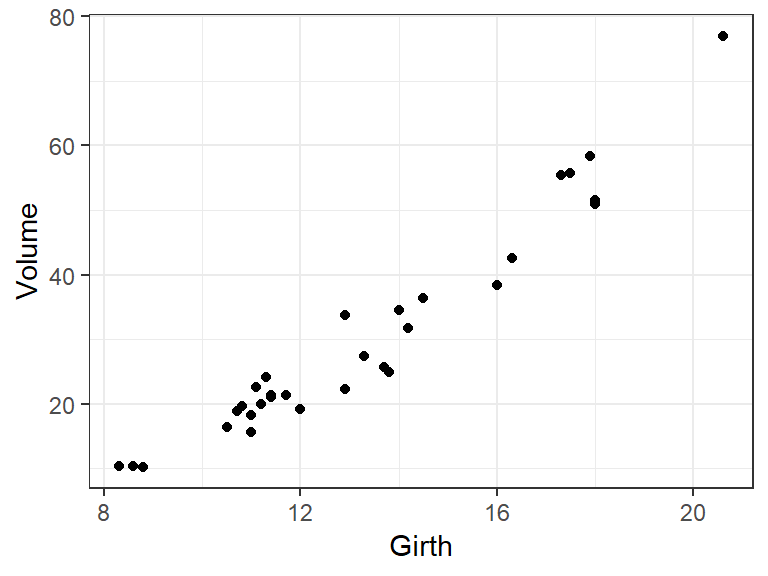
Šis grafikas vadinamas sklaidos diagrama.
Užduotis 3.3
- Dokumente „ggplot2 grafikai.R“ susikurkite naują skyrių, pasivadinkite jį „Pirmasis grafikas“.
- Į dokumentą nusikopijuokite grafiko braižymui skirtą kodą ir nusibraižykite pavyzdyje parodytą grafiką:
- Geriausia, kad, prieš vykdant kodą, kursorius mirksėtų ties žodžiu „ggplot“ arba pele būtų pažymėtos visos grafiką braižančios komandos (nuo „ggplot“ iki „geom_point“);
- Grafikas atsiras „Plots“ kortelėje;
- Jūsų kompiuteryje grafiko tema bus standartinė – pilka (vadovėlyje – balta).
- Dokumentą su kodu išsaugokite:
- Turėdami kodą, grafiką bet kada galėsite susigeneruoti iš naujo.
3.2.3 Kaip konstruojami „ggplot2“ grafikai?
Sistemos ggplot2 grafikai braižomi taip vadinamais sluoksniais. Praeito poskyrio programos kode matome tokius elementus:
- funkciją
ggplot()– ggplot2 grafikai įprastai pradedami braižyti parašius funkcijąggplot(), kuri sugeneruoja pradinius grafiko sluoksnius. Funkcijos skliaustuose nurodomi elementai, bendri visiems sluoksniams; - argumentą
data– šioje vietoje nurodoma duomenų lentelė. Dauguma tidyverse šeimos funkcijų pasižymi tuo, kad pirmasis argumentas yra duomenų lentelė.ggplot()– viena iš jų; mapping(liet. išdėstymas) – tai argumentas, kuriame aprašoma, kaip duomenys bus išdėstyti. Išdėstymas nurodomas funkcijosaes()(nuo angl. aesthetics, liet. estetika) skliaustuose. Pirmojo grafiko pavyzdyje x ašyje išdėstytos kintamojo „Girth“ reikšmės, y ašyje – „Volume“ reikšmės.- funkcijos
aes()skliaustuose kintamųjų pavadinimai nurodomi be kabučių. Tai būdinga daugeliui kitų tidyverse funkcijų ir rodo, kad funkcija labiau skirta interaktyviai analizei, o ne programavimui. To mums ir reikia; - funkciją
geom_point()– tai grafiko sluoksnis, kuris nurodo, kad duomenys bus atvaizduoti geometrinėmis figūromis – taškais. - operatorių „+“ – sluoksniai (grafiką kuriančios R komandos) sujungiami naudojant pliuso ženklą. Pliuso ženklas privalo būti eilutės gale arba viduryje, bet ne pradžioje.
Sistemos ggplot2 sluoksnių sujungimas:
- Norint sujungti kelis ggplot2 sluoksnius (komandas), naudojamas „+“ ženklas;
- Po šio ženklo, kita komanda įprastai rašoma iš naujos eilutės;
- „+“ rašomas arba tarp gretimų komandų toje pačioje eilutėje, arba eilutės gale.
- Pliuso ženklas negali būti eilutės pradžioje – tai sintaksės klaida.
BLOGAI:
ggplot()
+ kita_ggplot2_komanda()
GERAI:
ggplot() +
kita_ggplot2_komanda()
GERAI (bet nerekomenduojama, jei jungiama daug komandų):
ggplot() + kita_ggplot2_komanda() + trečia_ggplot2_komanda()
Užduotis 3.4
- Naudodami duomenų lentelę CO2 ir aukščiau pateiktą pavyzdį, nubraižykite, kaip anglies dioksido įsisavinimas (uptake) priklauso nuo šios medžiagos koncentracijos ore (conc). Jums tereikia nusikopijuoti kodą ir pakeisti duomenų lentelės bei kintamųjų pavadinimus. Didžiosios ir mažosios raidės – svarbu.
- Programos kodą išsaugokite.
3.2.4 Funkcija ggplot()
Funkcija ggplot() įprastai yra pirmoji ggplot2 grafiko konstravimo sekoje. Jos skliaustuose nurodomi elementai, bendri visiems sluoksniams. Įprastai tai yra duomenų lentelė ir kintamųjų išdėstymas, nors šiuos du dalykus galima nurodyti kiekvienam sluoksniui atskirai. Turint duomenis ir kintamųjų reikšmių išdėstymo komandą, ggplot() parenka koordinačių sistemą, ašis, jų ribas bei numatytąją grafiko temą, tačiau nei taškų, nei linijų, nei kitų geometrinių figūrų nebraižo (tam reikalingi kiti sluoksniai):
ggplot(data = trees, mapping = aes(x = Girth, y = Volume))Dažnai R naudotojai argumentų pavadinimų data ir mapping nerašo, tad kodas sutrumpėja:
ggplot(trees, aes(x = Girth, y = Volume))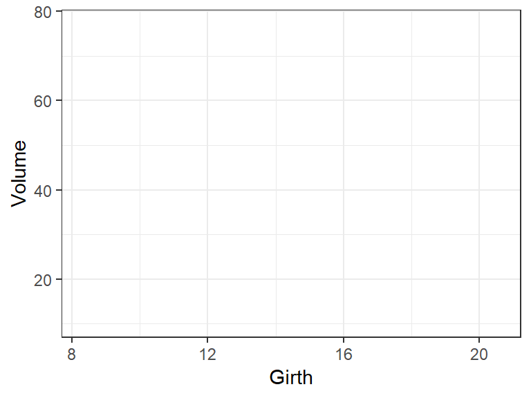
Užduotis 3.5 Parašykite kodą ggplot(BOD, aes(x = Time, y = demand)):
- Kas nubraižyta grafike?
- Kodėl nėra nei linijos, nei taškų?
3.2.5 Geomai: geometrinės figūros
Sistemos ggplot2 sluoksnių elementai sudedami pliuso ženklu „+“ sujungiant kelias grafiką formuojančias komandas (sluoksnius). Funkcija ggplot() pagal nurodytus duomenis sukuria tik numatytąją koordinačių sistemą ir ašis (kaip matote pavyzdyje aukščiau). Jei norime atvaizduoti duomenis, turime pridėti papildomą elementą – geometrinę figūrą („geomą“). Tai atlieka funkcijos, prasidedančios užrašu geom_.
„Receptas“, kaip sukurti paprastą ggplot2 histogramą:
ggplot(duomenys, aes(x = kintamasis1)) + geom_histogram(bins = 15)
Parametras bins – histogramos stulpelių skaičius.
„Receptas“, kaip sukurti paprastą ggplot2 sklaidos diagramą:
ggplot(duomenys, aes(x = kintamasis1, y = kintamasis2)) + geom_point()
Pastebėkite, kad kai kuriais atvejais reikia nurodyti ir x, ir y kintamuosius, kai kuriais tik x. Tai priklauso nuo to, kokio tipo grafiką siekiame nubraižyti.
Dažniausiai naudojamos geometrinės figūros, kai:
- nurodytas tiktai x ir jis yra kategorinis/diskretusis:
geom_bar()(stulpelinė diagrama).
Parodo, kaip pasiskirsto vieno kategorinio arba diskrečiojo kintamojo reikšmės.
- nurodytas x yra kategorinis/diskretusis, o y – tolydusis kintamasis:
geom_col()(stulpelinė diagrama).
Nubraižo stulpelinę diagramą, kai iš anksto žinomi kiekvienos grupės stulpelių aukščiai (pvz., jei norime atspausdinti dažnių lentelę).
- nurodytas tiktai x ir jis yra tolydusis:
geom_density()(branduolinio tikimybės tankio diagrama, BTD);geom_histogram()(histograma).
Parodo, kaip pasiskirsto vieno tolydžiojo kintamojo reikšmės.
- nurodytas x yra kategorinis/diskretusis, o y – tolydusis:
geom_boxplot()(stačiakampė diagrama);geom_violin()(smuikinė diagrama);geom_jitter()(pasklaidytų taškų diagrama);
Parodo, kaip tolydžiojo kintamojo reikšmės pasiskirsto kiekvienos kategorinio kintamojo grupės viduje arba kaip tolydžiųjų reikšmių pasiskirstymas priklauso nuo kategorinio kintamojo grupės.
- nurodyti x ir y yra tolydieji:
geom_point()(sklaidos diagrama);geom_line()(linijų diagrama);geom_jitter()(pasklaidytų taškų diagrama).
Parodo, kaip tarpusavyje susijusios (ar vienos nuo kitų priklauso) dviejų tolydžiųjų kintamųjų reikšmės.
Štai keletas pavyzdžių (pavyzdžiuose color – apvado spalva, fill – užpildo spalva):
- X – kategorinis/diskretusis:
ggplot(CO2, aes(x = Type)) +
geom_bar(fill = "red4")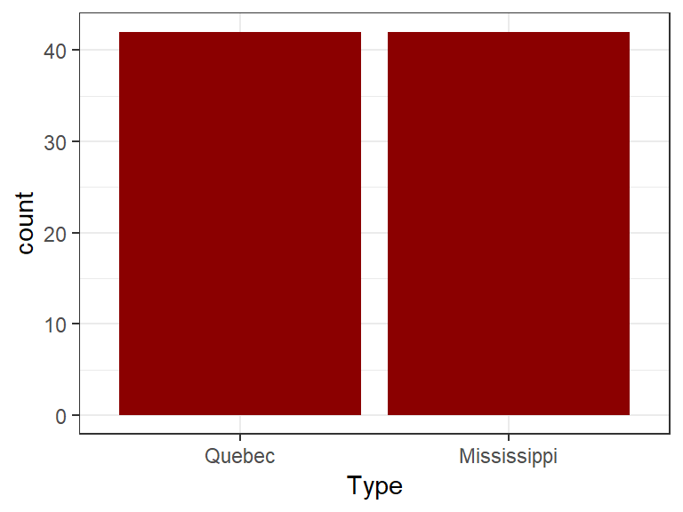 Abejose grupėse po 42 atvejus, todėl abu stulpeliai vienodo aukščio. Atkreipkite dėmesį, kad funkcija pati suskaičiavo, kiek kokios grupės narių yra imtyje, ir pagal tai parinko stulpelių aukštį.
- X – kategorinis/diskretusis, o Y – skaičius (dažnių lentelės spausdinimas):
# Sukuriama dažnių lentelė
darbuotojai <- data.frame(
darbingumas = factor( x = c("prastas", "vidutinis", "didelis"),
levels = c("prastas", "vidutinis", "didelis")),
skaičius = c(5, 27, 46))# Atspausdiname lentelę
print(darbuotojai)
## darbingumas skaičius
## 1 prastas 5
## 2 vidutinis 27
## 3 didelis 46# Grafikas
ggplot(darbuotojai, aes(x = darbingumas, y = skaičius)) +
geom_col()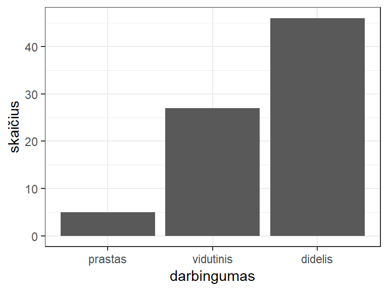 Atkreipkite dėmesį, kad funkcijai buvo nurodyta, kokio aukščio stulpelius brėžti.
- X – tolydusis:
ggplot(CO2, aes(x = conc)) +
geom_density(fill = "skyblue")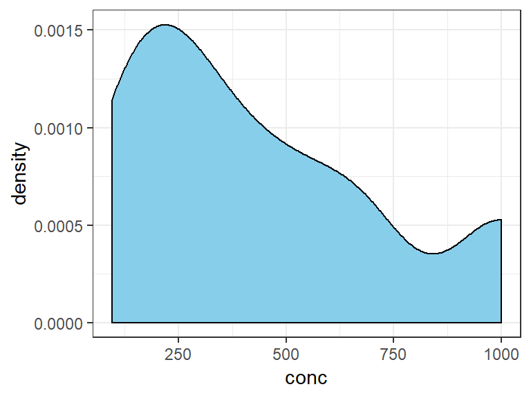
ggplot(CO2, aes(x = conc)) +
geom_density(fill = "skyblue3") +
geom_rug(color = "red") # Kiekvieną tašką brūkšneliu pažymi po grafikuggplot(CO2, aes(x = conc)) +
geom_histogram(bins = 7, color = "black")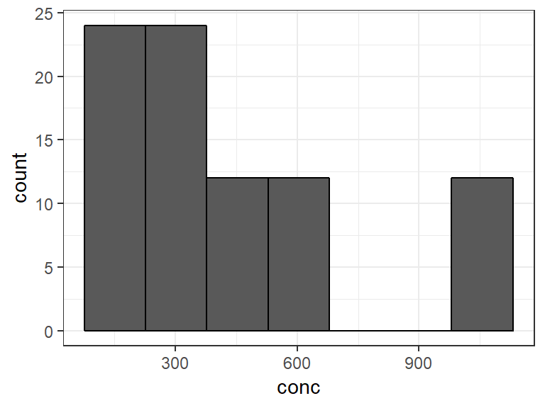 bins – histogramos stulpelių skaičius.
- X ir Y – tolydieji:
ggplot(BOD, aes(x = Time, y = demand)) +
geom_point()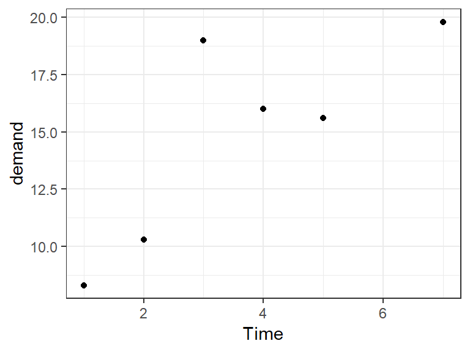
ggplot(BOD, aes(x = Time, y = demand)) +
geom_line()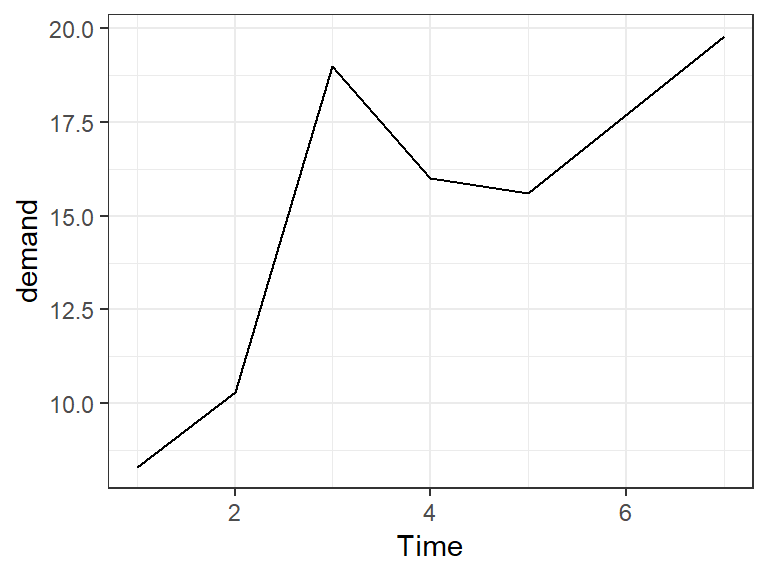
ggplot(BOD, aes(x = Time, y = demand)) +
geom_line() +
geom_point(color = "purple", size = 4)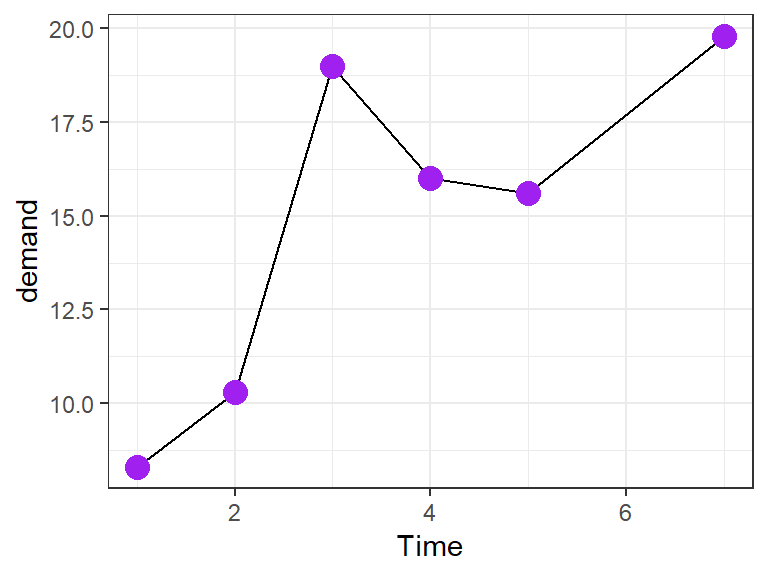
- X – kategorinis/diskretusis, Y – tolydusis:
ggplot(iris, aes(x = Species, y = Sepal.Length)) +
geom_boxplot()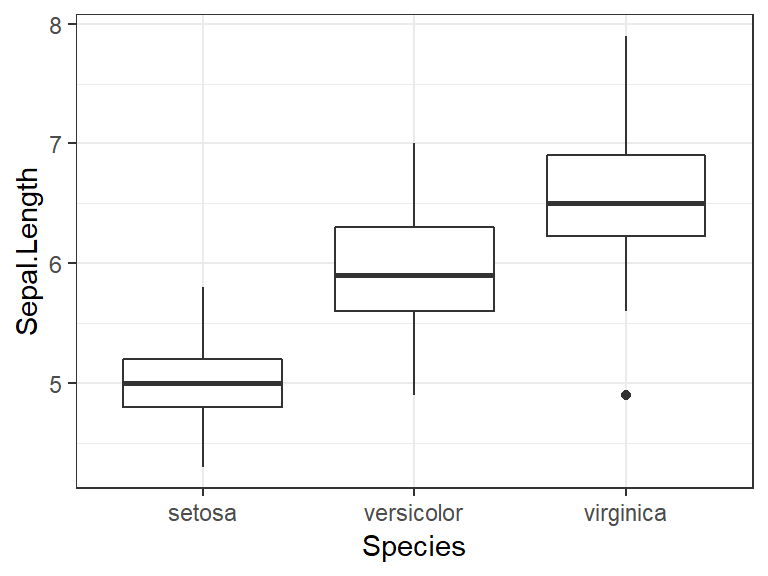
set.seed(123456)
ggplot(iris, aes(x = Species, y = Sepal.Length)) +
geom_jitter(width = .15)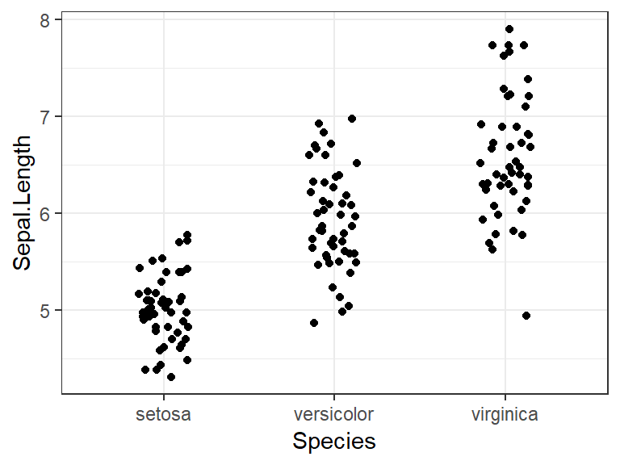 width – taškų pasklaidymo plotis.
ggplot(iris, aes(x = Species, y = Sepal.Length)) +
geom_violin()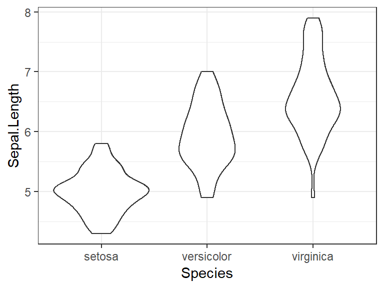
Užduotis 3.6 Grafikų analizė. Parinkite ir nubraižykite po grafiką, kuris galėtų atsakyti į šiuos klausimus (kiekvienam klausimui sukurkite atskirą poskyrį R Script dokumente):
- Duomenys iris:
- Kaip pasiskirsto kintamojo Sepal.Width reikšmės visoje imtyje?
- Kaip pasiskirsto kintamojo Petal.Width reikšmės visoje imtyje? (Parinkite kito tipo grafiką);
- Koks irisų rūšių skirstinys imtyje? Kurios rūšies daugiausiai?
- Kaip Sepal.Length priklauso nuo Petal.Length?
- Kaip Petal.Length reikšmės pasiskirsto pagal rūšis?
- Kurios rūšies pogrupyje kintamojo Sepal.Width reikšmės įprastai yra didžiausios?
- Duomenys npk (iš R paketo datasets). Nubraižykite kintamojo „yield“:
- histogramą:
- geometrinę figūrą kuriančios funkcijos (geom_histogram()) skliaustuose nurodykite parametrus
bins = 6, color = "black"(ar pastebite, kad čia kabutės, ne „kompiuterinės“, o „literatūrinės“?);
- analizuodami šį grafiką nustatykite, kiek imtyje yra reikšmių, mažesnių už 65?
- geometrinę figūrą kuriančios funkcijos (geom_histogram()) skliaustuose nurodykite parametrus
- branduolinio tankio grafiką;
- geometrinę figūrą kuriančios funkcijos (geom_density()) skliaustuose nurodykite parametrus
adjust = 1.5, fill = "green4";
- analizuodami grafiką preliminariai įvertinkite, kokios reikšmės labiausiai tikėtinos. Atsakymą pateikite kaip intervalą tarp dviejų sveikųjų skaičių (pavyzdžiui, 126-127);
- ką daro parametras „adjust“? (Paeksperimentuokite).
- geometrinę figūrą kuriančios funkcijos (geom_density()) skliaustuose nurodykite parametrus
- stačiakampę diagramą (x ašyje atidėkite kintamojo „block“ reikšmes):
- Eilės tvarka išvardinkite blokus nuo turinčio didžiausią iki turinčio mažiausią duomenų centro padėtį;
- Eilės tvarka išvardinkite blokus nuo pasižyminčio didžiausia iki pasižyminčio mažiausia sklaida (naudokite išskirtims atsparų sklaidos matą – IQR);
- Kuris blokas pasižymi didžiausia asimetrija?
- punkto c stačiakampių diagramų grafiką papildykite pasklaidytų taškų diagrama (
geom_jitter(width = 0.1)):- Įvertinkite grupių dydžius kiekviename bloke;
- Ką daro parametras
width?
- histogramą:
Žemiau – kitos savaitės pratybų medžiaga (kuri gali šiek tiek keistis).
3.2.6 Estetika: kintamojo reikšmių išdėstymas
Kintamųjų reikšmės gali būti atvaizduotos įvairiomis grafiko savybėmis: padėtimi x bei y ašyse, spalvomis, taškų dydžiais, linijos storiais, taškų formomis… Šie dalykai vadinami estetiniais elementais arba estetiniu išdėstymu (angl. aesthetics). Kintamojo reikšmių išdėstymas nurodomas funkcijos aes() skliaustuose. pvz., vietovę (Type), kuri gali būti Kvebekas arba Misisipė, atvaizduosime spalvomis:
ggplot(data = CO2, mapping = aes(x = conc, y = uptake, color = Type)) +
geom_point()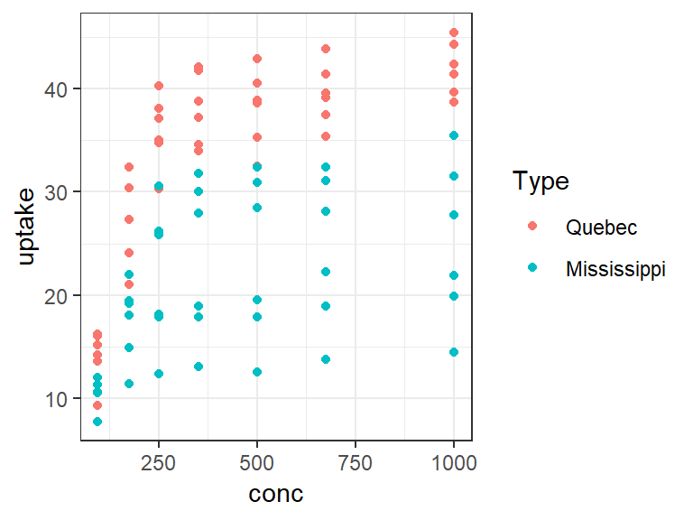
Medžio aukštį atvaizduosime ir spalvomis, ir taško dydžiais:
ggplot(data = trees, mapping = aes(x = Girth, y = Volume, color = Height, size = Height)) +
geom_point() Matote – mažas ir tamsiai mėlynas, didelis ir žydras.
Matote – mažas ir tamsiai mėlynas, didelis ir žydras.
Atkreipkite dėmesį, kad faktoriams automatiškai parenkama diskrečioji spalvų skalė, o skaitiniams kintamiesiems – tolydžioji.
Estetinių savybių rūšys
Kokios gali būti estetinės savybės? Tai priklauso nuo parinktos geometrinės figūros: kiekvienos figūros dokumentacijoje aprašyti galimi estetiniai elementai. Dažniausiai naudojami šie:
- x, y – išdėstymas x ir y ašyse;
- color, colour – pagrindinė spalva arba apvado spalva (ir amerikietiška, ir britiška rašyba tinka);
- fill – užpildo spalva;
- alpha – (ne)skaidrumas/(ne)permatomumas: 1 – visiškai nepermatomas, 0 – visiškai skaidrus;
- shape, pch – taško forma (pch – point character);
- size – dydis;
- stroke – „potepio“ storis (pvz., taško apvado linijos storis);
- linetype, lty – linijos tipas;
- linewidth, lwd – linijos storis;
- group – grupavimas, pvz., braižant linijas, skaičiuojant vidurkius. Jei pasirenkate vieną iš aukščiau aprašytų estetinių elementų, grupavimas vykdomas automatiškai;
- kiti.
Ne visos geometrinės figūros turi užpildo spalvą (parametrą „fill“).
Plačiau apie šiuos grafinius elementus (su iliustracijomis) rašoma:
- http://ggplot2.tidyverse.org/articles/ggplot2-specs.html
- http://www.cookbook-r.com/Graphs/Shapes_and_line_types/
Užduotis 3.7
- Parašykite kodą
?geom_point. Atsidariusioje dokumentacijoje susiraskite skiltį „Aesthetics“.- Pažiūrėkite, kokie estetiniai elementai gali būti panaudoti braižant taškus?
- Kurie iš jų privalomi? (Pažymėta pajuodintai).
- Pirmo punkto užduotį pakartokite su
?geom_line. - Nubraižykite sklaidos diagramas. Duomenų lentelės trees kintamųjų „Height“ ir „Girth“ išdėstykite x ir y ašyse, o „Volume“:
- spalvomis;
- (ne)skaidrumo skalėje.
Kur nurodoma, kaip išdėstyti reikšmes?
Pavyzdyje – iriso rūšių išdėstymas spalvomis. Visiems sluoksniams bendras išdėstymas nurodomas funkcijoje ggplot():
ggplot(iris, aes(x = Sepal.Width, y = Petal.Width, color = Species)) +
geom_point()Vien tik konkrečiam sluoksniui būdingus išdėstymo elementus galima nurodyti to sluoksnio funkcijos skliaustuose:
ggplot(iris, aes(x = Sepal.Width, y = Petal.Width)) +
geom_point(aes(color = Species)) 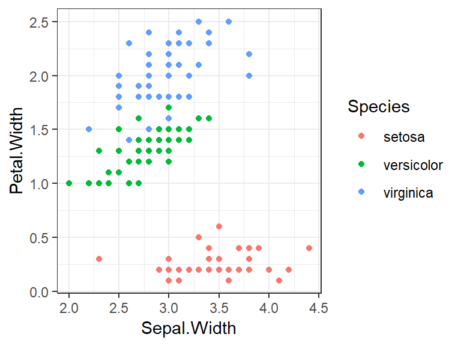
Kiekviename sluoksnyje galime patikslinti arba pakeisti, kokiu būdu bus pasirenkamos spalvos. Tad tai, kas parašyta ggplot() skliaustuose (šiuo atveju – savybė color), bus ignoruojama:
ggplot(iris, aes(x = Sepal.Width, y = Petal.Width, color = Species)) +
geom_point(aes(color = Petal.Width))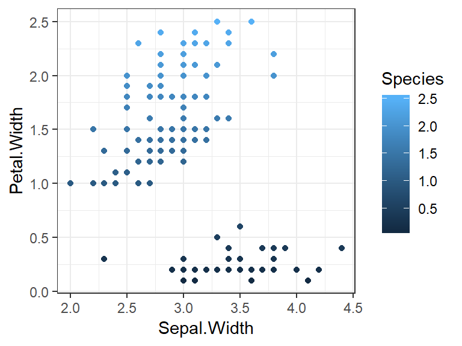
Be abejo, visus estetinio išdėstymo elementus galima nurodyti ir vien tik konkretaus sluoksnio viduje:
ggplot(iris) +
geom_point(aes(x = Sepal.Width, y = Petal.Width, color = Species))
Analogiškai galima elgtis ir su duomenimis. Kiekvienam sluoksniui gali būti atskiri duomenys ir atskiras išdėstymas. Visgi, atkreipkite dėmesį, kokiu būdu ir kurioje vietoje nurodomi duomenys (t.y., po išdėstymo):
ggplot() +
geom_point(aes(x = Sepal.Width, y = Petal.Width, color = Species), data = iris) 
Užduotis 3.8
- Nusibraižykite pirmus du poskyrio „Kur nurodoma, kaip išdėstyti reikšmes?“ grafikus papildomai pridėdami geom_line() sluoksnį:
- Kuo linijos skiriasi nuo taškų?
- Imkime pirmąjį punkto 1. grafiką, kuriame atvaizduota sklaidos diagrama ir naudojama duomenų lentelė iris. Spalvomis išdėstytos rūšys, išdėstymas nurodytas funkcijos ggplot(), o ne
geom_point()skliaustuose.- Susikurkite naują duomenų lentelę naudodami šį kodą:
iris2 <- filter(iris, Species %in% c("setosa", "virginica"))(programos kodas, kurį galite nusikopijuoti, yra žemiau. Čia – „literatūrinės“ kabutės);- kodas palieka tik tas duomenų eilutes, kuriose setosa ir virginica rūšių duomenys.
- taškų funkciją modifikuokite taip:geom_point(data = iris2). Likusio kodo nekeiskite:
- Pagal kuriuos duomenis (iris ar iris2) buvo nubraižytas grafikas?
- Kur nurodytas estetinis išdėstymas, kuris buvo panaudotas braižant taškus: funkcijos geom_point() ar ggplot() skliaustuose?
- prie b. punkto grafiko pridėkite geom_line():
- Kelių spalvų linijas ir kelių spalvų taškus matote?
iris2 <- filter(iris, Species %in% c("setosa", "virginica"))Parametro group svarba
Parametras group įprastai reikalingas braižant linijas ar norint kitu tikslu sugrupuoti duomenų reikšmes. Nenurodžius jo, ggplot2 ne visada linijas braižo teisingai. Šiuo atveju vienai spalvų grupei per visus taškus automatiškai braižoma viena linija:
ggplot(data = CO2, mapping = aes(x = conc, y = uptake, color = Type)) +
geom_line() +
geom_point()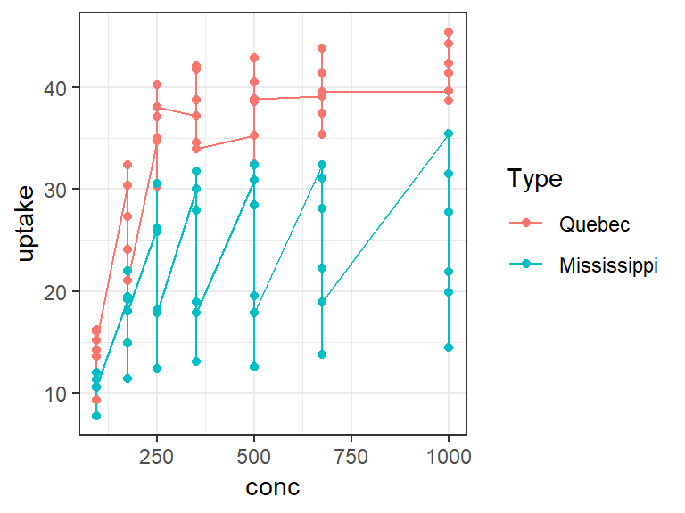 O šiuo atveju išreikštai nurodome, kad vienam augalui (o ne vienai spalvai) turi būti viena linija:
ggplot(data = CO2, mapping = aes(x = conc, y = uptake, color = Type, group = Plant)) +
geom_line() +
geom_point()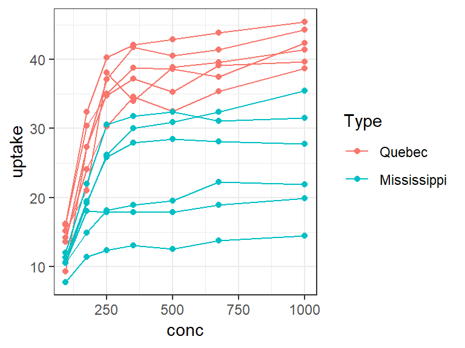
Užduotis 3.9 Iš paketo MASS užsikraukite duomenų lentelę Rabbit. Nubraižykite kraujospūdžio pokyčio priklausomybę nuo vaisto dozės. Priklausomybė turi būti pavaizduota ir linijomis, ir taškais. Skirtingomis spalvomis nusibraižykite kontrolinę ir vaisto gavusią grupes. Kiekviena linija turi vaizduoti atskirą eksperimentą (kintamasis Run). Svarbu perskaityti duomenų lentelės aprašymą. Duomenų lentelę reiktų peržvelgti naudojant funkcijas glimpse(), View() bei summary() (pažiūrėkite, kaip aprašomos kategorinių kintamųjų reikšmės).
- Preliminariai įvertinkite, kas įprastai įvyksta su kraujospūdžiu didinant vaisto dozę.
- Kuo skiriasi kontrolinės ir tiriamosios grupės atsakas:
- kai vaisto dozė \(\lt 100\mu g\);
- kai vaisto dozė \(\gt 100\mu g\).
- Ties kokia vaisto doze spalvomis pavaizduotos grupės skiriasi labiausiai?
3.2.7 Estetika: fiksuoto dydžio reikšmės parinkimas
Estetikos elementų reikšmes galima parinkti 2 būdais:
- estetikos elementų reikšmes išdėstyti pagal kintamųjų reikšmes naudojant funkciją
aes(); - nurodyti konkrečią estetinio elemento reikšmę kiekviename sluoksnyje atskirai (t. y., nebe funkcijos
ggplot()aes()
a. nurodant spalvos numerį nuo 1 iki 8 (būdas atėjo iš bazinės *R* grafikų braižymo sistemos);
b. nurodant anglišką spalvos pavadinimą kabutėse, pvz., `"green"`{.r}. Visi *R* esantys spalvų pavadinimai atspausdinami suvedus `colors()`{.r}, spalvų demonstracija -- `demo("colors")`{.r} (spausdami „Enter“ matysite vis kitą paveikslą. Siūlau paveikslus smarkiai pasididinti);
c. nurodant šešioliktainį spalvos kodą *RGB* sistemoje (*red, green, blue*), pvz., `"#12ff6d"`{.r} (*12* -- raudonos, *ff* -- žalios, *6d* -- mėlynos spalvos intensyvumas).
- galimos šešioliktainių skaičių reikšmės: 0, 1, 2, ..., 9, a, b, c, d, e, f.Jei norite pamatyti, kaip atrodo spalva, funkcijos scales::show_col() kabutėse įrašykite spalvos kodą arba pavadinimą, pvz., scales::show_col("#12ff6d") arba scales::show_col(5).
Pastaba: jei paketas yra įdiegtas kompiuteryje, dvigubo dvitaškio operatorius :: leidžia naudoti funkciją iš to paketo, paketo neužsikrovus (paketo_pavadinimas::funkcijos_pavadinimas()). Pvz., iš paketo scales naudojame funkciją show_col().
Pavyzdys. Konkrečios spalvos parinkimas.
ggplot(iris, aes(x = Sepal.Width, y = Petal.Width)) +
geom_point(color = "red4")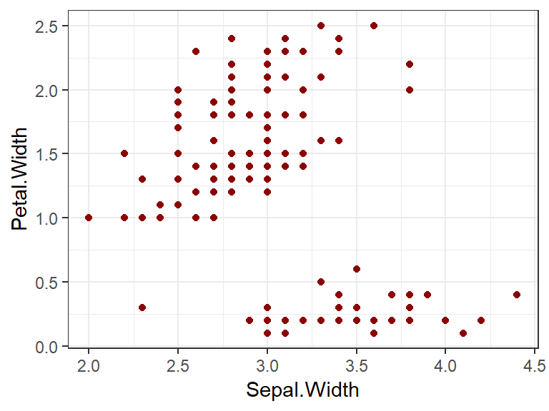
Spalvos ir permatomumo lygio parinkimas:
ggplot(iris, aes(x = Sepal.Width, y = Petal.Width)) +
geom_point(color = "red4", alpha = .3)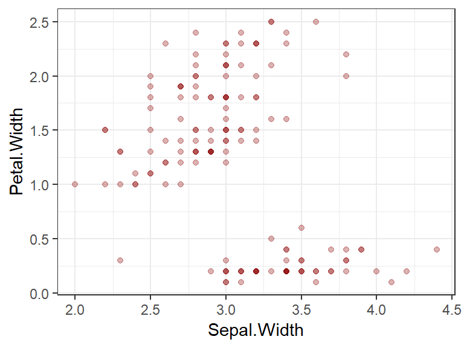
Padidinę taškų permatomumą, galime matyti, kuriose vietose taškai persidengia (tamsesnės vietos – daugiau taškų).
3.2.8 Grafikas – tai R objektas
Sistemos ggplot2 komandos kuria objektą (jo klasė „ggplot“, o pagal savo vidinę struktūrą – tai ilgas grafiką aprašantis sąrašas), kurį atspausdinus ekrane matome grafiką. Bet kuriame grafiko konstravimo etape šį objektą galima išsaugoti R atmintyje:
# Sukuriama tik koordinačių sistema ir ašys
grafikas <- ggplot(iris, aes(x = Sepal.Length, y = Sepal.Width))Parašius objekto su grafiku pavadinimą, grafikas atspausdinamas:
grafikasAtspausdinti galime ir išreikštai parašę print():
print(grafikas)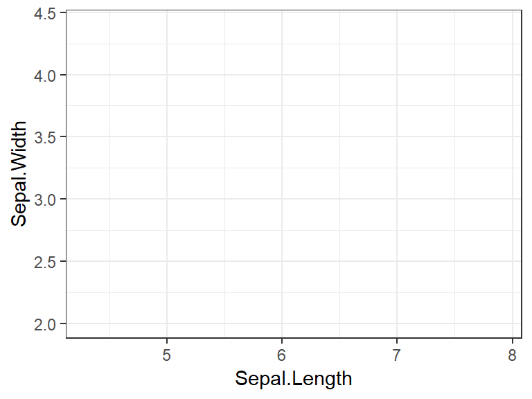
Vėliau prie šio objekto galima pridėti kitus ggplot2 sluoksnius:
# Pridedami taškai
grafikas2 <- grafikas + geom_point()
grafikas2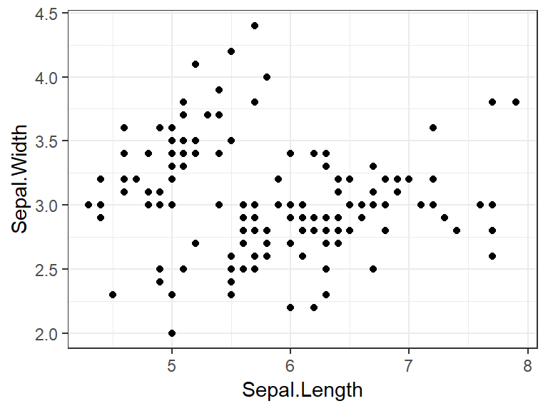
Anksčiau išbandėme, kaip atrodo taškais atvaizduoti duomenys, dabar galime išbandyti linijas:
# Pridedamos linijos
grafikas3 <- grafikas + geom_line()
grafikas3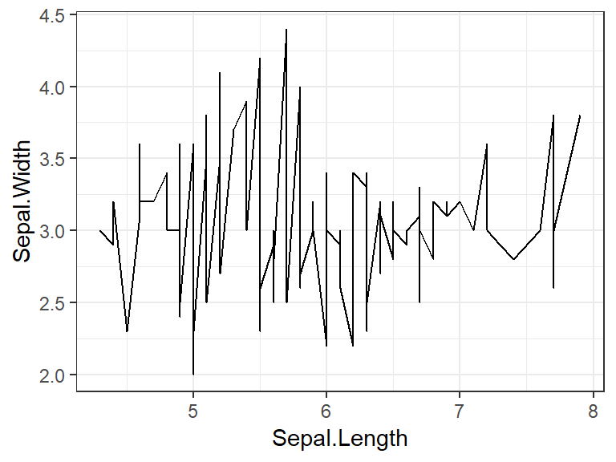
Grafiką aprašantį objektą galime išsaugoti arba kaip įprastinį R objektą, arba kaip aukštos kokybės grafiką (apie tai bus rašoma vėliau).
c + geom_dotplot() kodas veiktų? Užrašykite visą grafiką sudarantį kodą. Patiems kurti nereikia! Susiraskite, visas atsakymas parašytas atmintinėje.3.2.9 Facetės: subgrafikai
Palyginus su kitomis R grafikų braižymo sistemomis, netgi su kitomis programomis, labai didelis ggplot2 privalumas yra galimybė duomenis atvaizduoti subgrafikais, vadinamais facetėmis. Facetės – tai subgrafikai, į kuriuos duomenys yra išskirstomi pagal kategorinių kintamųjų reikšmes.
Yra 2 facečių tipai:
facet_wrap()– subgrafikus išrikiuoja į kiek galima labiau kvadratinę išdėstymo schemą;facet_grid()– subgrafikus išdėsto eilutėmis ir stulpeliais pagal nurodytų kintamųjų reikšmes.
Facečių sluoksnis pridedamas pridedant vieną iš aukščiau minėtų funkcijų. Naudojimas:
facet_wrap()skliaustuose rašoma:- bangelė
~ir kintamojo pavadinimas (pvz.,~ A). - jei norima išskirstyti pagal kelis kintamuosius, naudojamas
+ženklas (pvz.,~ A + B);
- bangelė
facet_grid()skliaustuose rašoma:- į eilutes išskaidančio kintamojo pavadinimas, bangelė
~ir į stulpelius išskaidančio kintamojo pavadinimas (pvz.,A ~ B). - jei norime vienos eilutės arba vieno stulpelio, vietoje kintamojo pavadinimo rašome tašką (pvz.,
. ~ A– viena eilutė,A ~ .– vienas stulpelis); - jei kintamųjų daugiau, galima naudoti
+ženklą (pvz.,A ~ B + C); - galioja ES taisyklė: pirma nurodomos eilutės, po to – stulpeliai.
- į eilutes išskaidančio kintamojo pavadinimas, bangelė
Pavyzdžiai:
graf <- ggplot(CO2, aes(x = conc, y = uptake, color = Type, group = Plant)) +
geom_line() +
geom_point()# facet_wrap — vienas kintamasis
graf + facet_wrap(~ Type)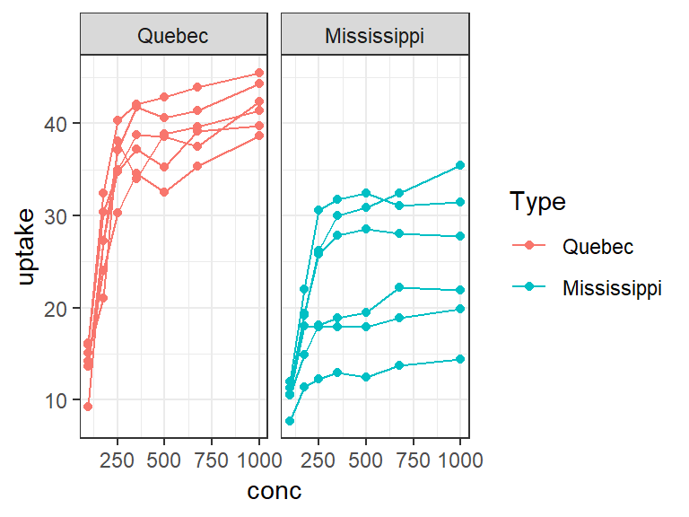
# facet_wrap — vienas keli kintamieji
graf + facet_wrap(~ Type + Treatment)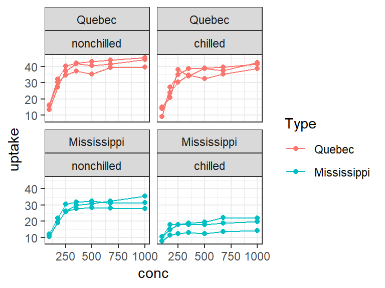 Pažvelkite į šį grafiką dar kartą. Kokia iš jo nauda biologine prasme? Misisipės augalai auga pietuose. Kvebeko – šiaurėje (pažiūrėkite žemėlapyje, kur yra šios teritorijos). Iš grafiko galime įtarti, kad pietiniai augalai prasčiau toleruoja šaltį: „Mississippi“ ir „chilled“ (atvėsinta) facetėje įsisavinimas mažiausias. Ar šitokia interpretacija jums atrodo logiška?
Panagrinėkime kitus facečių sudarymo variantus.
# facet_wrap — vienas keli kintamieji,
# nurodomas stulpelių skaičius.
graf + facet_wrap(~ Type + Treatment, ncol = 3)
# facet_grid
graf + facet_grid(Type ~ Treatment)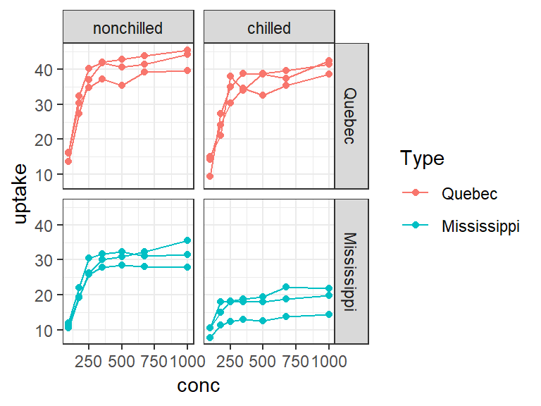
# facet_grid — viena eilutė
graf + facet_grid(. ~ Treatment)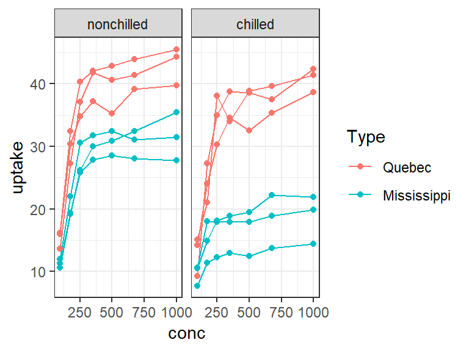
# facet_grid — vienas stulpelis
graf + facet_grid(Treatment ~ .)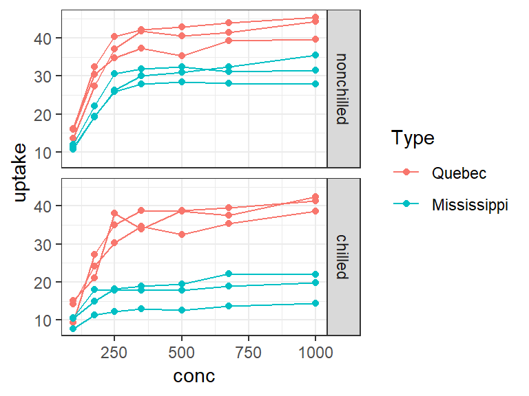
Programoje R užrašai, kuriuose kintamieji pasirenkami naudojant bangelę (~), vadinami „modelio formule“ arba tiesiog „formule“. Jie naudojami daugelyje statistinės analizės funkcijų. Daugiau informacijos suvedus komandas: ?`~` arba ?formula.
Modelio formulė – tai kintamųjų pasirinkimo būdas naudojant bangelę „~“.
Užduotis 3.12
- Iš R paketų užsikraukite lentelę iris ir peržvelkite ją naudodami glimpse(). Jei reikia, peržvelkite lentelės aprašymą.
- Nusibraižykite sklaidos diagramą pagal Sepal.Width ir Petal.Length. Spalvas parinkite ir į facetes suskirstykite pagal Species.
- Pagal kintamojo Petal.Length reikšmes nusibraižykite branduolinio tankio diagramas. Kiekviena rūšis turi būti atvaizduota skirtingo užpildo spalvos grafiku ir atskirose facetėse, išdėstytose į vieną eilutę.
- Iš R paketo datasets užsikraukite lentelę npk. Nubraižykite grafiką, kurio pavyzdys žemiau. Patarimai:
- Kintamųjų block ir yield reikšmes išdėstykite x ir y ašyse;
- Spalvas išdėstykite pagal P;
- Į facetes suskirstykite pagal N, P ir K;
- Facečių funkcijos viduje po formulės parašykite kodą
labeller = label_both. Atkreipkite dėmesį, ką jis daro; - Reikiamoje vietoje padėkite kablelį.
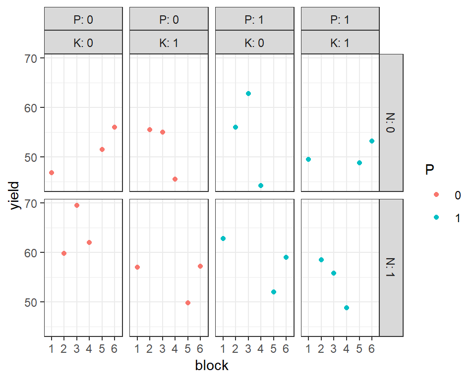
3.2.10 Pavadinimai
Grafikuose galima nurodyti/pakeisti grafiko, ašių, legendų pavadinimus.
Šiam tikslui daugiausiai galimybių turi funkcija labs(). Pavyzdys, kaip ji naudojama:
ggplot() +
labs(x = "x ašies pavadinimas",
y = "y ašies pavadinimas",
title = "Grafiko pavadinimas",
subtitle = "Paantraštė",
caption = "< Aprašymas >",
# Kiekvieno estetinio išdėstymo legenda
color = "Spalvų legenda", # nesimato
fill = "Užpildo spalvų legenda", # nesimato
shape = "Formų legenda", # nesimato
size = "dydžių legenda" # nesimato
)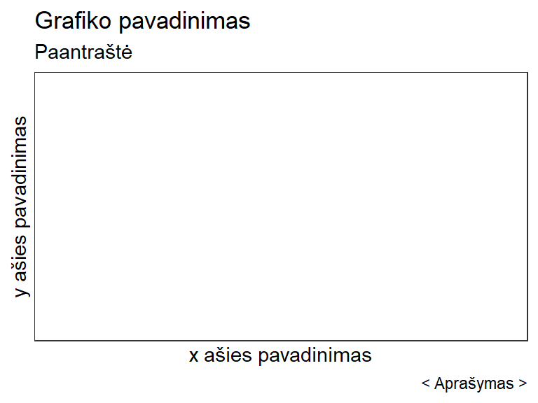
Iliustracijai susikurkime „ggplot“ objektą:
gg <- ggplot(iris, aes(x = Sepal.Length, fill = Species, color = Species)) +
geom_density(alpha = 0.3, adjust = 1.5)gg + labs(x = "x ašis", y = "y ašis")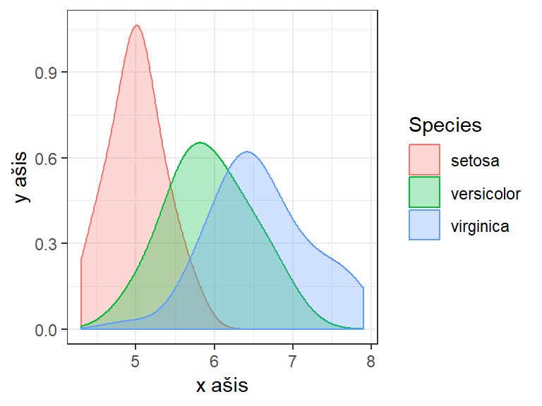
gg + labs(x = "x ašis",
y = "y ašis",
fill = "Spalvų legenda",
color = "Spalvų legenda")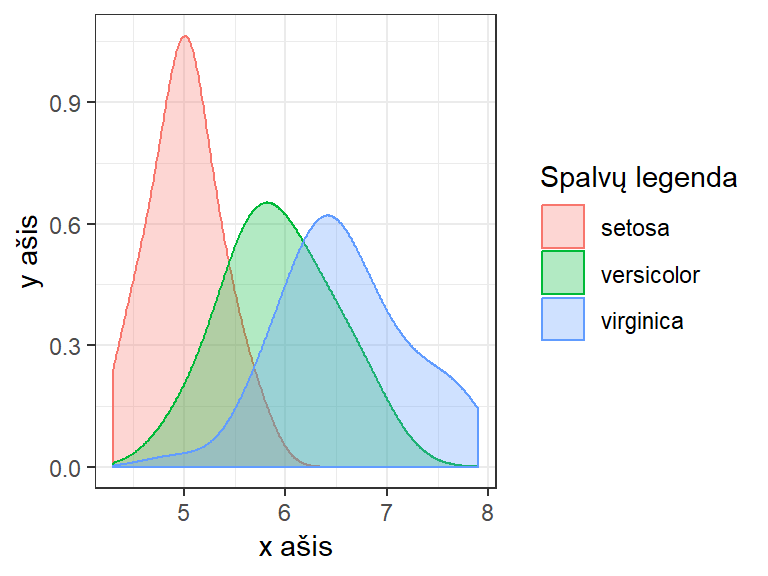 `
gg + labs(title = "Pavadinimas",
x = "x ašis",
y = "y ašis",
fill = "Užpildo spalvų legenda",
color = "Apvado spalvų legenda")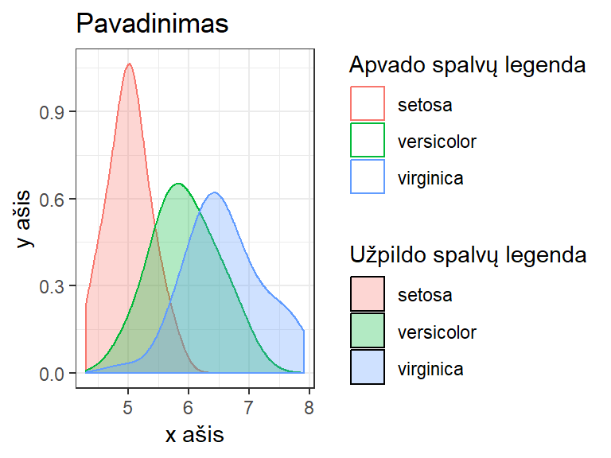
Grafiko pavadinimas gali būti nurodomas naudojant funkciją ggtitle("...").
gg + ggtitle("Grafiko pavadinimas")
Ašių ir legendų pavadinimai – nurodyti naudojant funkcijas:
labs(x = "...", y = "...", color = "...", fill = "...");xlab("...");ylab("...").
gg + ylab("<< Pasikeitė pavadinimas Y >>")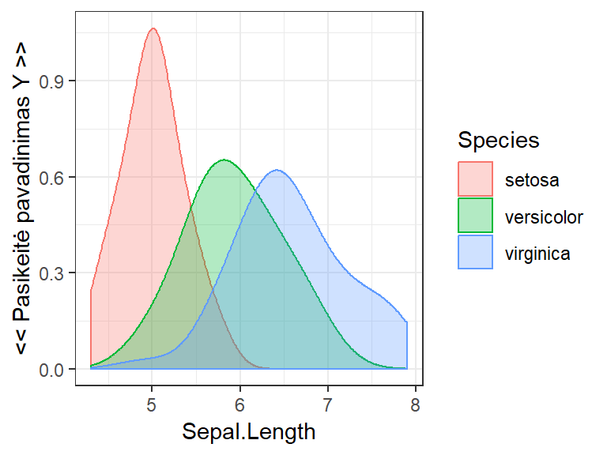
Užduotis 3.13 Duomenys trees. Pagal kintamojo Height reikšmes nubrėžkite histogramą:
- Parinkite tinkamą grupavimo intervalų skaičių, parinkite tinkamą apvado ir užpildo spalvą, apvadą pastorinkite;
- Grafikui suteikite pavadinimą, ašių pavadinimus sulietuvinkite, paantraštėje turi būti parašyta „Sukūrė: “ ir jūsų vardas, aprašyme turi būti įrašyta šiandienos data.
3.2.11 Temos
Grafiko tema – tai visos nuo duomenų nepriklausomos grafiko savybės, tokios kaip fono ar ašių linijų spalva, šriftas. Temas aprašančios funkcijos prasideda theme_...(), kur vietoje daugtaškio parašomas temos pavadinimas. Mano mėgstamas pasirinkimas – juodai balta tema, kurią sukuria funkcija theme_bw(). Standartinė tema theme_grey(). Daugiau temų – ggplot2 atmintinėje bei pakete ggthemes (pavyzdžių rasite paspaudę šią nuorodą).
gg + theme_grey()gg + theme_bw()gg + theme_dark()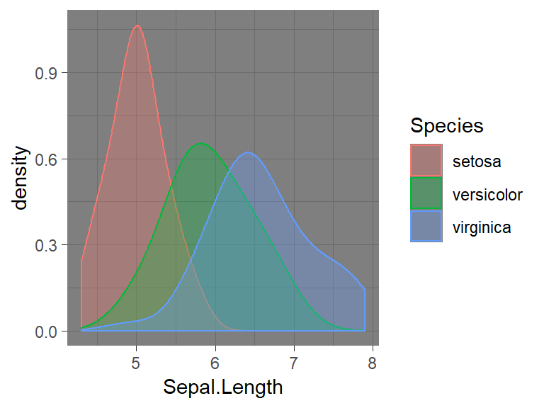
Užduotis 3.14 Užsikraukite duomenų lentelę Orange (apelsinmedžiai) iš paketo datasets:
- Sistema ggplot2 nusibraižykite sklaidos diagramą, kurios x ašyje būtų kintamojo age reikšmės, o y ašyje – circumference.
- Po to nusibraižykite tokį patį grafiką, kaip 1 punkte, tik papildomai spalvomis atvaizduokite kintamojo Tree reikšmes.
- Grafiką priskirkite objektui gg3.
- Objekte gg3 esantį grafiką patobulinkite pridėdami lietuviškus spalvų legendos ir ašių pavadinimus bei grafiko pavadinimą;
- Išbandykite visas 8 ggplot2 atmintinėje esančias temas (vieną temą vienu metu).
3.2.12 Temos nustatymas visiems grafikams
Temą galima nustatyti visiems grafikams iš karto naudojant funkciją theme_set() ir joje nurodant temą aprašančią funkciją:
# Standartinė pilka ggplot2 tema
theme_set(theme_grey())gg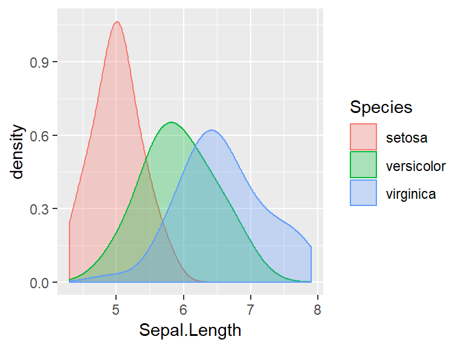
# Klasikinė tema
theme_set(theme_classic())gg
# Juodai balta tema
theme_set(theme_bw())gg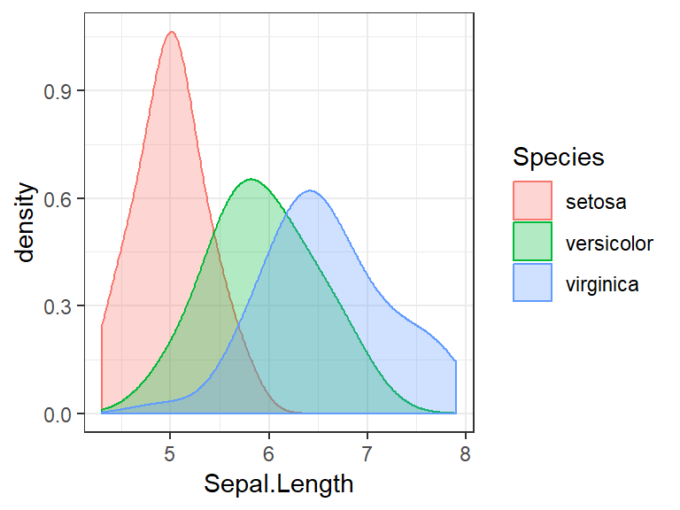
3.2.13 Ženklinimai ir pažymėjimai
Į sistemos „ggplot2“ grafikus galima įterpti įvairių ženklinimo elementų, linijų, rodyklių, kvadratų, etikečių užrašų. Apie tai plačiau atmintinėje ir dokumentacijos tinklapyje.
Horizontali linija.
gg + geom_hline(yintercept = 0.5, lwd = 1)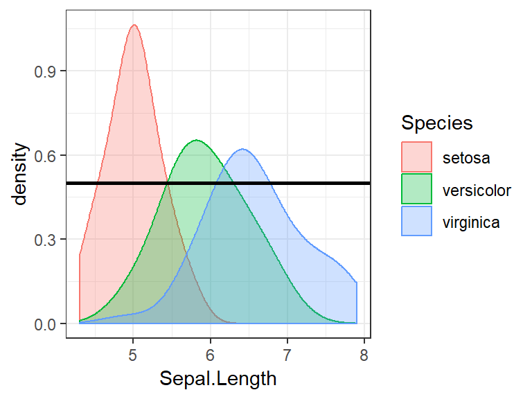
Vertikali linija.
gg + geom_vline(xintercept = 6, color = "blue")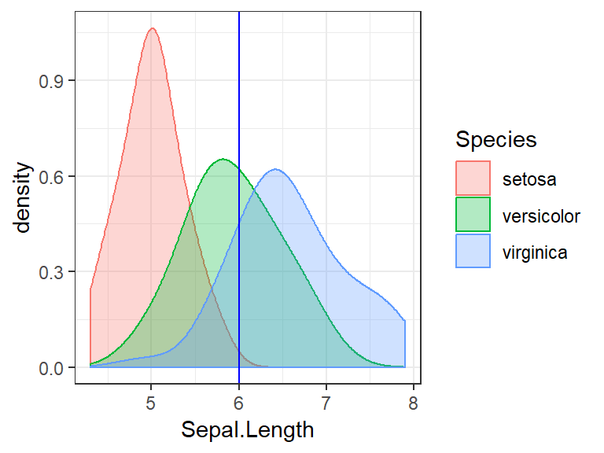
3.2.14 Statistinės transformacijos
Ar pastebėjote, kad naudojant geom_bar(), geom_histogram(), geom_density() ir panašias funkcijas nurodomos tik x reikšmės. Tuo tarpu y reikšmės apskaičiuojamos funkcijos viduje ir nubraižomos grafike.
Viena iš statistines transformacijas vykdančių funkcijų yra geom_smooth() braižanti tendencijos linijas.
ggplot(iris, aes(x = Sepal.Length, y = Sepal.Width)) +
geom_smooth()
## `geom_smooth()` using method = 'loess' and formula 'y ~ x'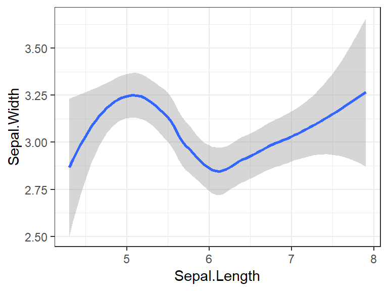
ggplot(iris, aes(x = Sepal.Length, y = Sepal.Width)) +
geom_point() +
geom_smooth(method = "lm")Čia „lm“ reiškia linear model, t. y, nubraižoma geriausiai taškus apibūdinanti tiesė.
3.2.15 Koordinačių sistemos
Sistemoje ggplot2 funkcijos, kurios prasideda coord_, pakeičia koordinačių sistemą. Pvz., coord_flip() sukeičia x ir y ašis vietomis. coord_polar() grafiką nubraižo polinėje koordinačių sistemoje ir taip stulpelinė diagrama tampa skrituline. Daugiau apie šias funkcijas skaitykite atmintinėje ir dokumentacijos tinklapyje.
bar <- ggplot(data = diamonds) +
geom_bar(
mapping = aes(x = cut, fill = cut),
show.legend = FALSE,
width = 1
) +
theme(aspect.ratio = 1) +
labs(x = NULL, y = NULL)
bar + coord_flip()bar + coord_polar()Užduotis 3.18
- Naudodamiesi lentele CO2, nubrėžkite stačiakampę diagramą. Prie grafiko kodo pridėkite
coord_flip(). Kaip atrodo grafikas? - Naudodamiesi lentele iris, nubrėžkite sklaidos diagramą. Prie grafiko kodo pridėkite
coord_equal(). Kaip pasikeitė grafikas? Pabandykite padidinti arba sumažinti šį grafiką. Ką pastebite?
3.2.16 Grafikų išsaugojimas
Grafikų išsaugojimui gali būti naudojama funkcija ggsave() arba RStudio „Plots“ lango mygtukas „Export“ (pav. 3.14).
Pav. 3.14: Grafikų išsaugojimo meniu.
Užduotis 3.19 Sukurkite ggplot2 grafiką. Jis turi atsirasti RStudio „Plots“ lange (kodą spausdinkite konsolėje). Naudodami mygtuką „Export“, grafiką išsaugokite:
- kaip bylą kietajame diske „.jpg“ formatu. Išsaugotą grafiką atsidarykite.
- į iškarpinę (angl. clipboard). Tada įklijuokite į „Word“ (ar analogišką) dokumentą spausdami Ctrl+V. Ar pavyko tai atlikti?
3.2.17 Šablonas ggplot2 grafikui
Sistemos ggplot2 grafikas gali būti sukurtas naudojant tokią „formulę“, kur didžiosiomis raidėmis parašyta kodo dalis turėtų būti pakeista pagal poreikius:
ggplot(data = <DUOMENYS>) +
GEOM_FUNKCIJA(
mapping = aes(<ESTETINIS_IŠDĖSTYMAS>),
stat = <STATISTINĖ_TRANSFORMACIJA>,
position = <POZICIJA>
) +
KOORDINAČIŲ_SISTEMOS_FUNKCIJA() +
FACEČIŲ_FUNKCIJA() +
PAVADINIMŲ_FUNKCIJA() +
SKALIŲ_FUNKCIJA() +
KITI_ELEMENTAI() +
PAGRINDINĖ_TEMA() +
TEMOS_KOREKCIJOS()Jums dar nežinomas ggplot2 galimybes siūlau atrasti naudojant grafinius įrankius „easyPlot“, „ggplotgui“ bei „ggedit“ kurie aprašyti žemiau.
3.2.18 Paketas plotly ir interaktyvūs grafikai
Papildinys plotly yra R paketas, kuriuo kuriami interaktyvūs grafikai. Šiame pakete yra funkcija ggplotly(), kuri įprastus ggplot2 grafikus paverčia interaktyviais (kuriuos galima padidinti, sumažinti, identifikuoti taškų koordinates).
library(plotly)grafikas <- ggplot(iris, aes(x = Sepal.Length,
y = Sepal.Width,
color = Species)) +
geom_point()Grafikas atspausdintas ekrane įprastiniu būdu:
grafikas
Grafikas, ekrane atspausdintas naudojant ggplotly(), tampa interaktyvus. Jis atsiranda nebe „Plots“, o „Viewer“ lange:
ggplotly(grafikas)Pav. 3.15: Interaktyvus grafikas. Užvedus pelės žymeklį virš taško, pasirodo jo koordinatės. Paspaudus veislės pavadinimą legendoje vieną kartą, tos veislės taškai išjungiami arba vėl įjungiami. Paspaudus legendos reikšmę du kartus – išjungiamos kitų veislių taškai. Veikia taškų priartinimo funkcija.
# ```{block2, type=“task”}
Užduotis 3.20
- Užduoties (kurios numeris 3.14) metu sukurtą ggplot2 grafiką atspausdinkite naudodami funkciją ggplotly() (paketas plotly privalo būti užkrautas):
- Nustatykite pasirinkto taško koordinates.
- Naudodami iris duomenis nubraižykite sklaidos diagramą, kurioje rūšys vaizduojamos skirtingomis spalvomis:
- Nustatykite pasirinkto taško koordinates.
- Legendoje 2 kartus spragtelkite pele užrašą „virginica“. Kas nutiko?
- Vieną kartą spragtelkite legendos užrašą „setosa“. Kas nutiko?
- Paspauskite pagrindinį pelės klavišą kur nors grafike ir jį laikydami pelę nutempkite į šalį. Kas nutiko?
- Paspauskite mygtuką su nameliu. Kas nutiko?
- Kuo skiriasi ggolot2 grafikas, atspausdintas įprastu būdu, nuo grafiko, atspausdinto naudojant funkciją ggplotly()?
3.2.19 Įrankis easyPlot
Įrankis easyPlot yra shiny3 programėlė, kuri skirta kurti nesudėtingus ggplot2 grafikus.
Yra 2 šio įrankio versijos:
- internetinė versija http://www.michalm.net/shiny/easyPlot/
- R paketas, įdiegiamas iš saugykols „GitHub“ (
devtools::install_github("majkamichal/easyPlot")).
Įrankio naudojimas. Užkraunamas paketas easyPlot, tada įrankis atidaromas naudojant funkciją tokiu pačiu pavadinimu easyPlot(). Funkcijos skliaustai gali būti tušti, jei duomenis norite įkelti vėliau (nerekomenduoju):
easyPlot::easyPlot()Bet geriau duomenis nurodyti iš karto funkcijos skliaustuose. Šiam įrankiui reikia, kad duomenų lentelėje būtų bent 2 stulpeliai. Duomenų lentelės pavadinimas nurodomas kabutėse:
easyPlot::easyPlot("iris")Atsidaręs įrankio langas atrodo maždaug taip, kaip vaizduojama pav. 3.16 bei 3.17. Jei langas per mažas, rekomenduoju paspausti mygtuką „Open in Browser“ ir grafiką konstruoti interneto naršyklėje atsidariusiame lange.
Pav. 3.16: Įranko „easyPlot“ lango viršus: pagrindinė meniu juosta ir grafikas.
Pav. 3.17: Įranko „easyPlot“ lango apačia: valdikliai ir programos kodas.
Įrankis generuoja programos kodą, kurį, baigus kurti grafiką, nusikopijuokite į R ir išsaugokite. Kodas pateikiamas įrankio lango viduje.
Paleidus įrankį, programa R blokuojama iki tol, kol įrankis veikia. Darbas įrankiu baigiamas paspaudus išjungimo mygtuką (arba uždarius įrankio langą).
Užduotis 3.21
- Duomenys CO2:
- Duomenų lentelę CO2 įsikelkite į easyPlot.
- Įrankio langą pasididinkite per visą ekraną arba atsidarykite naršyklės lange („Open in Browser“ mygtukas);
- Viršutinėje juostoje pasirinkite vieną iš norimų grafikų tipų: „Scatterplot“, „Histogram“, „Boxplot“, „Bargraph“.
- Patyrinėkite šio įrankio galimybes keisdami grafiko parinktis;
- Nusibraižykite histogramą iš 7 stulpelių raudonu užpildu ir mėlynu stulpelių apvadu.
- Kiekvieno augalo tipo (Type) histogramas išdėstykite facetėmis viena žemiau kitos.
- Lango apačioje yra vieta su programos kodu. Konstruodami grafiką stebėkite, kaip keičiasi kodas.
- Kai susikonstruosite norimą grafiką, nukopijuokite šį kodą ir įklijuokite į RStudio atidarytą dokumentą.
- Uždarykite įrankio langą paspausdami uždarymo mygtuko ikoną. Papildomai uždarykite įrankio langą, jei jis neužsidarė.
- Naudodami RStudio, atspausdinkite grafiką.
3.2.20 Įrankis ggplot GUI
Įrankis ggplotgui („ggplot GUI“) yra shiny programėlė, kuri taip pat skirta kurti paprastus ggplot2 grafikus. Šis įrankis vėlgi turi 2 versijas:
- internetinė versija https://site.shinyserver.dck.gmw.rug.nl/ggplotgui/
- R paketas, įdiegiamas iš saugyklos CRAN (
install.packages("ggplotgui")).
Įrankio naudojimas. Užkraunamas paketas ggplotgui, tada įrankis atidaromas naudojant funkciją ggplot_shiny(). Funkcijos skliaustai gali būti tušti, jei duomenis norite įkelti vėliau (nerekomenduoju):
ggplotgui::ggplot_shiny()Visgi, geriausia nurodyti duomenų lentelės, kurią norite vizualizuoti, pavadinimą (be kabučių):
ggplotgui::ggplot_shiny(iris)Atsidaro įrankio langas, kuriame pasirinkite reikiamą kortelę (pav. 3.18, pav. 3.19). Jei langas per mažas, rekomenduoju paspausti mygtuką „Open in Browser“ ir grafiką konstruoti interneto naršyklėje atsidariusiame lange.
Pav. 3.18: Įrankio „ggplotgui“ langas: „ggplot2“ grafiko kortelė ir valdikliai.
Pav. 3.19: Įrankis „ggplotgui“: interaktyvaus „plotly“ grafiko kortelė.
Pav. 3.20: Įrankis „ggplotgui“: programos kodo kortelė.
Įrankis generuoja programos kodą, kurį, sukūrę norimą grafiką, nusikopijuokite į R ir išsaugokite. Kodas pateikiamas kortelėje „R-code“ (pav. 3.20).
Paleidus įrankį, programa R blokuojama iki tol, kol įrankis veikia. Uždarius įrankio langą, darbas įrankiu baigiamas.
Užduotis 3.22
- Duomenys CO2:
- Duomenų lentelę CO2 įsikelkite į ggplotgui.
- Įrankio langą pasididinkite per visą ekraną arba atsidarykite naršyklės lange („Open in Browser“ mygtukas);
- Viršutinėje juostoje pasirinkite kortelę „ggplot“.
- Susikurkite norimą branduolinio tankio grafiką;
- Grafikui suteikite pavadinimą, jis turėtų būti 16 šrifto dydžio;
- X ir Y ašims suteikite lietuviškus pavadinimus;
- padidinkite permatomumą iki 60%;
- Kortelėje „Plotly“ galite matyti, kaip atrodo interaktyvi grafiko versija (ją galite padidinti-sumažinti ir t.t.);
- Kortelėje „R-code“ parašytas programos kodas: grafiko kūrimui, interaktyviam spausdinimui bei saugojimui.
- Konstruodami grafiką stebėkite, kaip keičiasi kodas.
- Kai susikonstruosite norimą grafiką, nukopijuokite šį kodą ir įklijuokite į RStudio atidarytą dokumentą.
- Išjungimo mygtuko nėra, tad tiesiog uždarykite įrankio langą. Kol langas atidarytas, tol R bus blokuojamas;
- Naudodami RStudio atspausdinkite grafiką „Plots“ lange. Tam nukopijuotame kode duomenų lentelės pavadinimą „df“ reikia pakeisti į tikrąjį (t. y. CO2, be kabučių);
- Grafiką nukopijuokite į iškrapinę ir įklijuokite į „Word“ tipo dokumentą. Dokumentą išsaugokite.
3.2.21 Įrankis ggedit
Įrankis ggedit yra shiny programėlė, skirta redaguoti ggplot2 grafikus – ypač spalvų sluoksnį ir temą.
Įrankio naudojimas. Sukurkite ggplot2 grafiką, jį išsaugokite kaip R objektą. Pvz.:
p <- ggplot(iris, aes(x = Sepal.Length, y = Petal.Length)) +
geom_point(aes(color = Species)) +
geom_smooth()Įsitikinkite, kad įrankis ggedit įdiegtas jūsų kompiuteryje. Tada panaudokite jį:
pnew <- ggedit::ggedit(p)Atsivers langas (jei jis per mažas, siūlau jį atsidaryti naršyklėje paspaudus „Open in Browser“ mygtuką) panašus į atvaizduotąjį pav. 3.21. Paspaudus reikiamus meniu juostos mygtukus, galima atidaryti spalvų sluoksnio (pav. 3.22) ir temos (pav. 3.23) redagavimo langus.
Pav. 3.21: Įrankio „ggedit“ pagrindinio lango fragmentas.
Pav. 3.22: Įrankis „ggedit“: spalvų sluoksnio redagavimo langas.
Pav. 3.23: Įrankis „ggedit“: temos redagavimo langas.
Darbas įrankiu baigiamas paspaudus mygtuką „Done“ (pav. 3.21). Tada sukuriamas programos kodas, kurį galime atsispausdinti. Atkreipkite dėmesį, kad tai ne visas kodas grafikui sukurti, o tik jo dalis, kurią sukūrė ar pakoregavo įrankis.
Gaunamo kodo pavyzdys:
print(pnew)
##
## 1
## geom_point(mapping=aes(colour=Species),stroke=1,alpha=0.3,size=9,shape=22)+geom_smooth(alpha=0.23,weight=0,linetype=2,size=2,fill='#DEA5A5',colour='#4876FF')+
## scale_colour_manual(values=c('#FA8072','#45CC3B','#6495ED'))+
## theme()Šį kodą rekomenduojama pertvarkyti tam, kad jis taptų tvarkingesnis:
- Kodą nusikopijuojame į langą, kuriame galime jį redaguoti (pvz., į R Script langą);
- Visą nukopijuotą kodą pažymime pele, tada spaudžiame greitųjų „RStudio“ klavišų kombinacijas:
- pirma Ctrl+Shift+A (kodą padalins per kelias eilutes, sudės tarpus beveik visur, kur jų reikia),
- po to Ctrl+I (kiekvieną kodo eilutę reikiamu atstumu atitrauks nuo krašto).
- Tada tinkamai sudėkite reikiamas savo pradinio ir „ggedit“ sugeneruoto kodo dalis:
# Reikalinga pradinio kodo dalis:
ggplot(iris, aes(x = Sepal.Length, y = Petal.Length)) +
# Įrankiu „ggedit“ pakoreguotas kodas:
geom_point(
mapping = aes(colour = Species),
stroke = 1,
alpha = 0.3,
size = 9,
shape = 22
) +
geom_smooth(
alpha = 0.23,
weight = 0,
linetype = 2,
size = 2,
fill = '#DEA5A5',
colour = '#4876FF'
) +
scale_colour_manual(values = c('#FA8072', '#45CC3B', '#6495ED')) +
theme()
Daugiau informacijos apie įrankį ir video pamokų galite rasti adresu:
- https://www.r-statistics.com/2016/11/ggedit-interactive-ggplot-aesthetic-and-theme-editor/
- https://metrumresearchgroup.github.io/ggedit/
Užduotis 3.23 Duomenų lentelė CO2:
- sukurkite branduolinio tankio diagramą, kuria lyginami duomenų pogrupiai;
- šios diagramos spalvas pakoreguokite naudodami įrankį „ggedit“;
- baigę korekcijas paspauskite „Close“ mygtuką;
- sutvarkykite pateiktą kodą;
- ši kodą sujunkite su pradinio grafiko kodu, kad gautumėte rezultatą, kurį matėte įrankyje „ggedit“;
- Galutinį grafiką atspausdinkite.
3.2.22 Kelių grafikų išdėliojimas greta
Norint išdėlioti kelis ggplot grafikus greta, naudinga funkcija plot_grid() iš paketo cowplot. Šiame skyriuje bus pademonstruota, kad tokia funkcija yra, o daugiau informacijos funkcijos dokumentacijoje: ?cowplot::plot_grid.
grafikas_a <- ggplot(BOD, aes(Time, demand)) +
geom_line()
grafikas_b <- ggplot(iris, aes(Sepal.Width, Petal.Length, color = Species)) +
geom_point() cowplot::plot_grid(grafikas_a, grafikas_b,
rel_widths = c(2, 3),
labels = "AUTO")cowplot::plot_grid(grafikas_a, grafikas_b,
nrow = 2,
labels = "AUTO")Jei šis variantas neatlieka to, ko jums reikia, gali būti naudingos šios instrukcijos:
- „Laying out multiple plots on a page“;
- „Multiple plots in one page“;
- „ggplot2 - Easy Way to Mix Multiple Graphs on The Same Page“.
Taip pat galimas variantas kelis grafikus išsaugoti ir įsikelti į grafikos apdorojimo programas ir jose pasidaryti tai, ko reikia. Profesionalioms programoms tinka PDF formatu (vektorinė grafika, dėl kurios neprarandama kokybė) išsaugoti grafikai.
3.2.23 Resursai: ggplot2
- Skyrius apie ggplot2 (pradedantiesiems): http://r4ds.had.co.nz/data-visualisation.html
- Atmintinė: https://github.com/rstudio/cheatsheets/raw/master/data-visualization-2.1.pdf
- Oficiali ggplot2 dokumentacija: http://ggplot2.tidyverse.org/reference/
- Įrankis, skirtas mokytis ir tirti ggplot2 savybes: http://databall.co/shiny/shinyggplot/
- Grafikų galerija su programos kodu http://r-statistics.co/Top50-Ggplot2-Visualizations-MasterList-R-Code.html
- Mokomoji medžiaga http://r-statistics.co/ggplot2-Tutorial-With-R.html
- ggplot2 papildantys paketai http://www.ggplot2-exts.org/ggrepel.html
- Įrankis „easyPlot“ http://www.michalm.net/shiny/easyPlot/
- Įrankių darbui su ggplot2 saugykla: https://www.showmeshiny.com/category/visualization/ggplot2/
- Resursų sąrašas: https://gist.github.com/Pakillo/c2c7ea11c528cc2ee20f
„Shiny“ yra R paketas, skirtas kurti interaktyvias tinklapio pavidalo programėles, įprastai skirtas įvairioms duomenų analizės temoms. Daugiau informacijos https://shiny.rstudio.com/↩